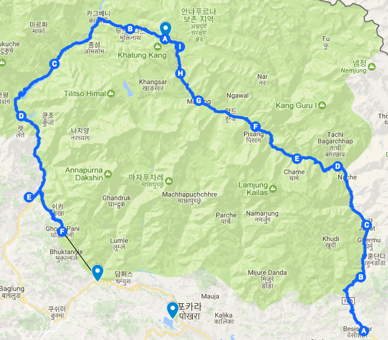
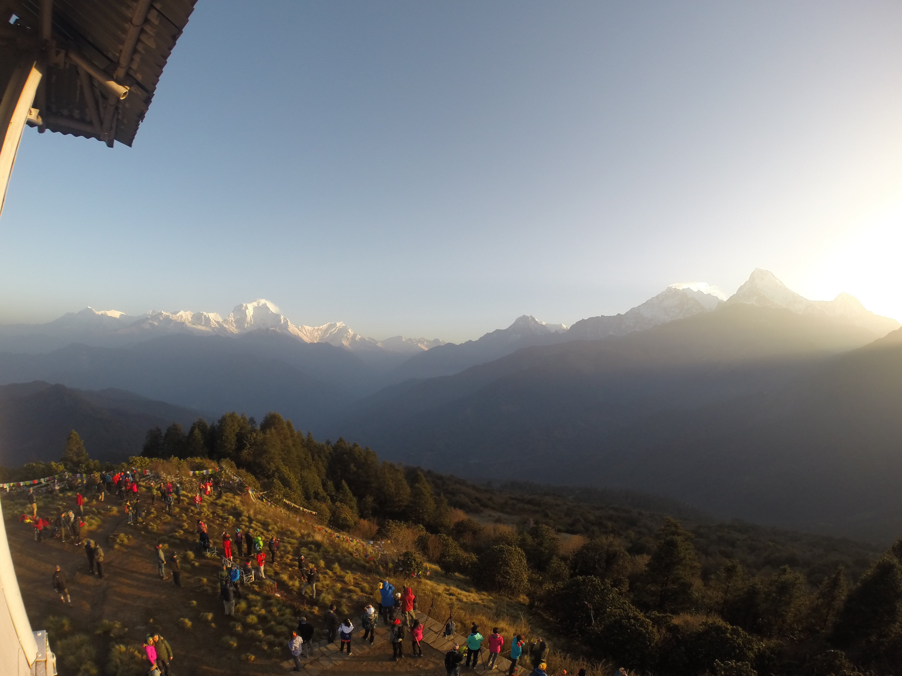

오늘 이동한 경로 (F) -> (Hile) (총 9km)
Ghorepani -> Pulhill -> Ghorepani -> Hile -> Pokhara by zeep

굿바이 안나푸르나!
오늘 드디어 안나푸르나 써킷을 마무리 하는날이다. 어제 정말 어려운 등산을 했는데 오늘은 아침에 푼힐 전망대에서 일출을 보고 계속 하산하면 된다. 새벽 4시반에 머리에는 헤드라이트를 착용하고 출발했다. 약 3200m고지까지 올라가는데 의외로 1시간 정도 밖에 걸리지 않는다. 베낭은 모두 숙소에 두고 몸만 올라갔기 때문에 더 수월하게 올라갈 수 있었던것 같다.
약 2주동안 안나푸르나에 있으면서 트래킹이 종료되는 마지막 순간이 어떨지 상상해보지 못했다. 그래서 그런지 미처 대비하지 못한 아쉬움이 크게 몰려왔다. 시원 섭섭했다. 그동안 개고생을 했기 때문에 원래 묵었던 게스트하우스로 돌아가는것이 무척 신이 나면서도 한편으로는 미운정고운정이 들었는데 이렇게 헤어진다는것이 아쉽기도 했다. 해가 떠오르는 안나푸르나 전경을 바라보니 오늘이 마지막이라는것이 참 익숙치 않게 다가온다.
푼힐전망대의 일출
 일출을 구경하러 푼힐전망대에 모인 트레커들
15일동안 안나푸르나에서 어떤것들이 기억에 남는지 떠올려봤다. 오랫동안 미국인 패트릭과 그 가이드 타쿠어와 동행했던일, 그리고 로즈와 라미로와 롯지에서 즐겁게 지냈던 일, 지나가는데 위에서 돌이 떨어져 위험에 처할뻔 했던일, 히치하이킹에 성공했던일, 길을 잘 못들어 낭떠러지 길로 진입했던일, 황량한 사막속을 혼자 걸으며 절대적인 고독을 경험한 일, 시인 같았던 L선생님과의 3일동안의 동행. 인생에서 최고 힘들었던 경험 쏘롱라 패스 넘기. 평범한 언덕에서 대 자연의 경이로움을 경험했던 일. 아름다웠던 칼로파니 마을. 쏘롱라 패스를 넘은 뒤 다끝난것 같았던 몇일동안의 하산길 트레킹이 너무 힘들었던 일, 몬스터(개)와의 만남과 대응. 길에서 만난 셀 수 없을정도로 수많은 사람들. 그리고 그들과의 짧고 길었던 대화. 그 수많은 대화를 통해 생긴 영어에 대한 자신감. 눈앞에 펼처진 다울라기리 산의 장엄함. 숲길이 아닌 자동차 도로로 걸을때 흙먼지들. 등등 많은 일들이 있었고 모두 나는 여태까지 경험해보지 못했던 일들이었다. 2주의 시간이 정말 길었던것 같다. 다른세상에 갔다가 집에 돌아온 느낌이다.
푼힐 에서 일출 구경을 마치고 숙소로 돌아와 아침 식사를 한 뒤, 어제 만났던 한국인 부부와 헤어졌다. 여행중에는 헤어짐도 만남과 같이 무척 자연스럽고 쉽게 이루어진다. 아쉽지만 그것도 여행의 일부분이다. 뒤에 앉아있던 중국인들에게 워 짜오 찡찌쉰. 워 쉐씨 한웨. 예전에 배웠던 중국어 문장을 씨부리며 가볍게 인사한뒤. 숙소를 떠났다. 안나푸르나에서 나의 마지막 여정이다. 원래는 나야풀 까지 걸을 수 있지만, 내 무릎 상태가 좋지 않아 중간에 지프차를 타고 포카라로 이동하기로 했다. 조금만 내려가면 지프차를 탈 수 있는 장소를 만날 수 있을것이다.
내려가는길에 올라오는 사람들이 보인다. 그들은 푼힐 전망대부터 시작하는 코스를 돌고 있을 것이다.그들의 코스가 나처럼 긴 써킷 트레킹 코스는 아니겠지만 이제 곧 개고생할 그들의 모습을 떠올리니 불쌍하기 그지없었다. 마치 상병이 갓 입소한 훈련병을 보는 느낌이랄까?
사진만 나열된 여행 서적이나, 블로그들이 별로 재미없는 이유는 무엇일까? 본것만 나열해서 그렇지 않을까? 대부분 컨텐츠가 사진으로 채워져있다는것은 본것만 나열했다는 뜻일 것이다. 하지만 여행중엔느 본것 뿐많아니라 들은것 배운것 경험한것 느낀것 수많은 것들이 있다. 그것들은 풍부하고 조화롭지 못하게 담은 블로그나 서적들이 재미없지 않을까 싶다. 나도 그래서 이 글은 최대한 사진만 나열하는것을 자제하려고 한다.
곧 도착할 것만 같은 하산길이 왜이렇게 어려운지 모르겠다. 정말 하루도 쉬운날이 없다. 내려가도 끝이없다. 그리고 내려가는 길이 너무 가파르다. 이길을 어떻게 올라갈까? 까마득하다. 내려가는 계단길이 너무 가파라서 무릎에 통증이 살살 오기 시작했다. 걱정된다. 빨리 지프를 타고 돌아가고 싶다. 정말 아무생각없이 하산했던것 같다. 그러다가 로라와 리웁을 만났다. 딱봐도 어려보이는 백인 여자애들이 었다. 그동안 외국인에게 말거는것에 대한 공포를 극복한 나는 막 말을 걸기 시작했고 곧 그들도 나처럼 최대한 빨리 지프를 타고 포카라로 돌아가고 싶어한다는것을 알게되었다. 그래서 지프를 같이 타고 가기로 했다.
처음에 나는 나야풀까지만 지프를 타고 나야풀에서 포카라로 버스를 타고 갈 예정이었다. 비용때문이었다. hile라는 마을을 조금 지나서였다. 드디어 만난 지프차 앞에서 흥정을 시작하는데 나야풀 까지 5000루피 포카라까지 7000루피란다. 나야풀까지가는 거리가 무척 가까운데 너무 비쌌다. 길이 험하기 때문이란다. 결국 6000에 포카라까지 가는것으로 흥정을 마무리했다. 드디어 내 모든 트레킹이 끝났다. 이제 진짜 끝이 났다. 드디어 끝이 났다는것이 믿기지 않을정도였다. 지프를 타고 가면서 로라와 리웁과 이런저런 대화를 이어나가다 다들 지쳐서 잠이 들었다. 근데 길 사정은 좋지 못해 제대로 자지는 못했다.
오랜 시간 걸려 도착한 포카라 우리는 같이 점심을 먹기로 했다. Auzora라는 일식집이 맜있었던 기억이 있어서 같이 그곳에 갔다. 같이 점심을 먹고 정말 즐겁게 대화했다. 그들은 나이는 21살이고 대학가기전에 1~2년동안 휴식기간을 갖는 중이라고 한다. 대부분의 덴마크 청년들이 대학에 가기전에 휴식기간을 갖고 일하거나 여행을 하는등 본인의 시간을 갖는다고 하는데 그런 문화나 사회구조가 너무 부러웠다.
식사를 마치고도 우리는 한참을 이야기 했다. 특이했던점은 얘네는 스마트폰을 이용하지 않았다. 19세기에서나 사용할법한 노키아 2g폰을 사용하고 있었다. 그리고 카메라도 1회용 필름카메라를 사용하고 있었다. 근데 고장이 나서 안나푸르나 트레킹 도중 단 한장도 찍지를 못했다. 안나푸르나에서 사진을 한 장도 찍지 못한 사람은 니들 뿐일거라고 말했다. 식사를 마치고 헤어졌다. 서로 덴마크 영화이야기도 많이 했는데 내일이나 같이 포카라에 있는 영화관에가서 영화나 보자고 했다. 내일 또 마날 수 있을지는 모르겠다. 내일 나에게 또 아떤일이 펼쳐질지 모르는일 이니까? 그러고 보니 내일은 블로그에 여행기를 업로드하는 시간을 가져야겠다. 어디 인터넷 빠른 까페에 가서 하루종일 작업해야겠다. 그리고 페북으로 영화관 위치를 보내놓고 걔네들과 만날 수 있을면 만나면 좋겠다.
그리고 돌아온 윈드폴 게스트하우스. 마치 고향에 돌아온 편안한 느낌이었다. 주인 아주머니 아저씨도 아주 반갑게 맞아주셨다. 다행이 방도 하나 있어서 다른데서 묶을 필요도 없었다. 따듯한 물로 온수 샤워를 한 뒤 이곳에 장기숙박을 하고 계신 분께 영화 몇편을 받았다. 그중에 한국에서부터 보고싶었던 히든피겨스가 있었다! 일기만 마무리 한뒤 히든 피겨스를 봐야겠다. 그런데 배고파서 결국 9시에 저녁을 먹으로 밖에 나왔다.
푼힐 전망대 전경